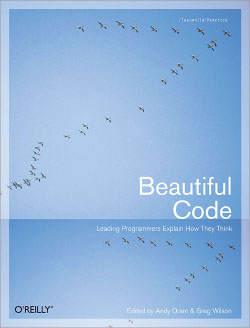

Beautiful Code : Leading Programmers Explain How They Think

33 essays, edited by Andy Oram
I was wondering how to explain why I didn't like this book as much as I thought I would - possibly as much as I thought I ought to. Thirty-odd genius bitwranglers delving into their favourite bits of code - surely it must be packed with fabulous insights into the zen of programming. But something about it left me flat, and I was having trouble putting my finger on why. Fortunately Jeff Atwood's ever brilliant Coding Horror has saved me the bother, by explaining it perfectly.
Programmers love code. It is the culmination of their labours. It's not just a document or a diagram, but is a dynamic, living record of their conceptual jujutso. But to focus on the code itself, in a variety of languages, which few readers are likely to be familiar with all of, is a relatively superficial theme, and comes at the expense of the abstract designs that the code embodies, and of the features and capabilities of the languages themselves.
Rating 6/10: Contains some gems, but generally falls between two stools.
Comments
Comments powered by Disqus